, power-conversion (wall-plug) efficiency
, power-conversion (wall-plug) efficiency  and, for lighting, luminous efficacy
and, for lighting, luminous efficacy  with
with  = eye sensitivity, 1 at 555 nm); it turns on near
= eye sensitivity, 1 at 555 nm); it turns on near  , is driven by a current set by a series resistor or a current source, and couples into a fibre only a fraction
, is driven by a current set by a series resistor or a current source, and couples into a fibre only a fraction Efficiencies
- Internal QE
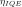
(radiative fraction), extraction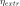
(escape cone, Fresnel), injection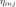
: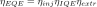
(LED physics). 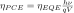
: the drive voltage exceeds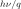
because of series resistance and heterojunction offsets.- Photometry: the eye weighs power by
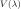
(photopic curve, peak 683 lm/W at 555 nm). Luminous flux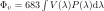
; luminous efficacy of the source = flux per electrical watt. Luminous intensity (candela) is flux per steradian; LED "brightness" in datasheets is usually mcd on axis.
Picture: eye sensitivity and an LED drive circuit
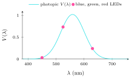
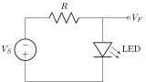
 .
.I–V characteristic and the turn-on voltage
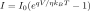
with an ideality factor between 1 (diffusion) and 2 (recombination in the depletion region), plus series resistance at high current (diode current). Extrapolating the linear high-current part to gives
gives 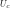
, with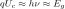
: measuring for LEDs of different colours gives Planck's constant from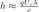
.Temperature dependence
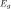
falls with (GaAs Varshni:
(GaAs Varshni: 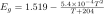
eV): the emission peak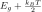
red-shifts (≈ 0.25 nm/K in GaAs: 864 nm at 300 K, 877 nm at 350 K), the width grows and drops (more non-radiative recombination, carrier leakage): output falls ≈ 0.5–1%/K. Heat sinking is part of LED design.
grows and drops (more non-radiative recombination, carrier leakage): output falls ≈ 0.5–1%/K. Heat sinking is part of LED design.
LED types for fibres
Surface-emitting (SLED, Burrus type: well etched to bring the fibre close to a small active area) and edge-emitting (ELED: light guided in the active layer, narrower beam, ≈ 5× more power into a fibre, used with single-mode fibre over short links). A Lambertian source smaller than the core couples
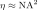
of its power: 4% for NA = 0.2. Pigtailed LEDs come with the fibre already aligned. Superluminescent diodes (amplified spontaneous emission, broad spectrum, high power) are the bridge to lasers.Worked examples
- Red LED, 650 nm,
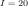
mA,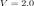
V,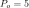
mW: photons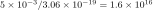
s , electrons
, electrons 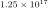
s: ; 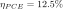
;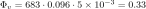
lm; efficacy 8 lm/W. - Blue power LED, 450 nm, 350 mA at 3.0 V, 450 mW: , . A green LED of the same optical power would look 20× brighter (
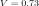
vs 0.034). - Series resistor: 5 V supply,
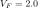
V at 20 mA: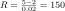
Ω, dissipating 60 mW, more than the LED emits. - Planck from LEDs: red 630 nm at
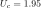
V, green 525 nm at 2.35 V, blue 470 nm at 2.62 V →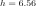
, 6.59,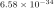
J s (within 1% of the true value).
Engineering applications
Solid-state lighting (efficacy > 150 lm/W), displays and backlights, indicator LEDs, optocouplers, plastic-optical-fibre links (red LEDs at 650 nm), IR remote controls, LED drivers (constant-current, PWM dimming to avoid colour shift).
Exam-style exercise
A 870 nm GaAs LED with
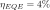
is driven at 50 mA and 1.6 V, and butt-coupled to a step-index fibre with NA = 0.25. (a) Emitted power. (b) PCE. (c) Power in the fibre. (d) Emission peak and width at 300 K.Solution
(a)
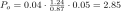
mW. (b)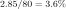
. (c)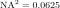
→ 0.18 mW (−7.5 dBm); with Fresnel loss at the chip surface already included in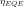
. (d)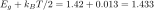
eV → 865 nm;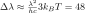
nm.Pitfall
Efficacy (lm per electrical W) and luminous efficiency of radiation (lm per optical W, max 683) are different numbers; and collapses quickly at the ends of the spectrum, so deep-red and deep-blue LEDs look dim at equal power.